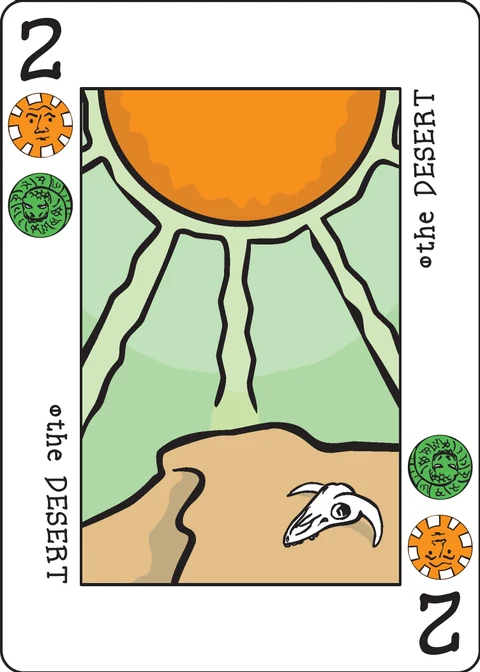

Reino de Ámbar
área e influencia contra los bárbaros — por José Carlos de Diego Guerrero
Only the solo game is implemented in this app. The rules exist only in Spanish; the official text is reproduced in full below, untranslated — that reproduction is the copy of the rules.
English summary (not the official rules)
This section is a summary written for this app; the Spanish text below is
authoritative. You are the head of an influential family in the Amber Kingdom;
a dummy player (autómata) opposes you. Across 7 rounds each of you plays one
of your seven Action cards (the six Aces plus one Pawn of your family) to one of the
seven board areas its suit marks, placing an influence marker and carrying out that
area's effect — gold and markers from the Lunatic, income at the Market, a Problem
solved without opposition at the Penitent, markers from the Castle at the Castle, an
opponent's marker removed at the Cave, a re-deploy-and-act at the Chance Meeting, and
frontier defence at the Borderland. Then each of you may try to resolve one of the two
face-up Problems by paying 1 gold: whoever has the most presence (markers on the areas
whose suits match the Problem, the Confidente counting where it stands) wins it; resolving
yields prestige (PV), a Confidente move, or an area action. Problems nobody resolves
raise the barbarians' power (shown on the Excuse, maximum 6). After round 7 the
barbarians attack: every PV card whose value is at least 6 − barbarians +
your Borderland markers is discarded; whatever PV remains is your score, and any PV at
all means the kingdom endures — zero means the barbarians win.
El texto oficial (en español)
Compendio
Los jugadores asumen los roles de las cabezas de familias influyentes, política y militarmente, en el Reino de Ámbar. A la sombra, los jugadores compiten por prosperidad y reputación. Como cabeza de familia, cada jugador intenta, a través del hábil empleo de sus siete cartas de Acción, aumentar el poder, influencia y prestigio de su familia, evitando a su vez ser aniquilado por las hordas bárbaras que pretenden asolar el reino.
Cuando juega una carta de acción, puede sumar influencia en lugares o personalidades influyentes del reino. De manera, por ejemplo, que cuando opta por aumentar su influencia sobre the Market, incrementa su acceso al Oro; o cuando presta sus atenciones sobre the Castle, recibe más influencia; o cuando visita al brujo malvado que vive en the Cave elimina un marcador de influencia de uno de sus oponentes.
Cada jugador a lo largo de solo siete Rondas, siguiendo su propio camino, realizará sus propias elecciones con las cartas de acción de su mano para intentar ganar prestigio.
En cada Ronda los jugadores tienen, además, deben intentar resolver dos de los Problemas más graves que asolan el Reino. Cada vez que un Problema se resuelva su salvador podrá mejorar su prestigio o posición, hacer uso del Confidente o contratar los servicios especiales de lugares o personalidades. Por contra, si no se resuelven los Problemas que aparecen en cada Ronda los bárbaros ganarán poder. En raras ocasiones, la mejor elección será obvia, pero a menudo no lo será. Un buen jugador encontrará los momentos oportunos para hacer el mejor uso de sus cartas y de los Problemas a resolver.
Al final de la partida, el jugador con más prestigio acumulado es el ganador.
Componentes
- 1 mazo de Decktet + 1era. Expansión. Necesitarás adicionalmente dos copias extras de los Ases.
- 42 marcadores de influencia (discos): 10 rojos, 10 negros y 10 verdes. Si juegas con la variante de dos periodos (años) necesitarás 4 marcadores de influencia adicionales de cada color.
- 12 de Oro (octógonos de color amarillo). Si lo prefieres puedes usar monedas (mucho más cómodo).
- 1 Confidente (cualquier peón que no sea de color rojo, negro o verde).
- 1d6 para el valor de poder de los bárbaros.
- 1 marcador de jugador inicial.
Conceptos básicos
- REINO DE ÁMBAR es un juego de 1 (en solitario) a 3 jugadores para Decktet, con una duración aproximada de unos 30-45 minutos.
- Jugando cartas de acción, los jugadores intentan progresar con una de las tres facciones (familias influyentes) del juego (The Light Keeper, The Watchtower, The Harvest) en el Reino de Ámbar.
- Al final de la partida, el jugador con la mayor prestigio es el vencedor de la partida. Pero, ¡cuidado! Es posible que parte del Reino de Ámbar sea devastado por los bárbaros, debilite a tu familia, y de al traste con tu estrategia. No los subestimes.
Preparación
- Cartas de Acción: Cada jugador recibe un set idéntico de cartas de
acción, formado por 7 cartas: 6 ases y 1 Peón (
 )
al azar entre las tres facciones del juego.
)
al azar entre las tres facciones del juego. - Tablero de juego: Conforma el tablero de juego que representa el
Reino de Ámbar con éstas 8 cartas (me referiré a ellas a partir de ahora como áreas de
juego): The Excuse, the Penitent, the Lunatic, the Castle, the Market, the Cave, the
Chance Meeting, the Borderland. Coloca the Excuse y the Borderland
() en los extremos, baraja las 6 restantes y
colócalas al azar boca arriba, formando la siguiente figura (los números indican la
posición):
| THE | 1 | 2 | 3 | THE |
|---|---|---|---|---|
| EXCUSE | 4 | 5 | 6 | BORDERLAND |
- Suministro Personal: Cada jugador (incluido el dummy en el modo en solitario) lleva un color (negro, rojo o verde) y comienza en su suministro con 4 marcadores de influencia (discos) y 3 de Oro (octógonos). Ningún jugador bajo ningún concepto durante la partida puede acumular en su suministro personal más de 10 marcadores de influencia y/o 4 de oro.
- Influencia inicial: Cada jugador lanza 2d6 y coloca un marcador de influencia inicial para cada resultado en las posiciones tal y como se indica en el diagrama de arriba. Si lo prefieres puedes no permitir los dobles (obligar a que sean posiciones diferentes).
- Reserva general: Los restantes marcadores de influencia (4 por jugador) y Oro (1 por jugador) se colocan a un lado como reserva general.
- Mazo de Problemas: Las 24 cartas de Problemas con lugares/personalidades/eventos se barajan y forma un mazo con ellas.
- Bárbaros: Empiezan con un valor de poder/ataque de cero (estan calmados) sobre la carta the Excuse.
Desarrollo de la partida
- La partida se juega a lo largo de un único periodo (año). En el cual se realizan 7 luchas de poder (Rondas). Al final de estas reglas tienes una variante de juego para alargar la partida y jugar dos periodos.
- Los jugadores tienen Rondas. Comienza el jugador inicial (que se determina al azar, o cómo desees) y la partida se desarrolla en el sentido de las agujas del reloj. Aclaración: En el modo en solitario el jugador dummy siempre empieza a jugar.
- Problemas: Al inicio de cada Ronda se hacen públicas, a la vista de todos, tantas cartas de Problemas con lugares/personalidades/evento especial como número de jugadores (en el juego en solitario, se sacan 2). Estos son los problemas más importantes a los que debe enfrentarse el reino, y de los que depende en mayor o menor medida que su familia no obtenga influencia y/o prestigio.
- En cada una de las siete Rondas de juego se realizan dos fases consecutivas: Primero se debe ejecutar una fase de Acciones. Y luego, opcionalmente una fase de Resolución de Problemas.
Acciones
Empezando por el jugador inicial y continuando en el sentido de las agujas del reloj, cada jugador debe elegir por orden y públicamente una carta de Acción de su mano. Entonces, la coloca boca arriba en su pila de descarte (tapando por tanto la acción anterior realizada) y ejecuta de inmediato una de las Acciones en una de las áreas del tablero de juego que coincida con uno de los símbolos de la carta de Acción elegida. Para ello debe poner un marcador de influencia sobre el lugar/personalidad del Reino de Ámbar elegido de su Suministro Personal.
En el modo Solitario el jugador dummy extrae su primera carta de Acción (no la elige), y entre las posibilidades que tiene primero irá siempre a the Borderland, y sino entre las restantes opciones a par/impar salvo que sea un absurdo (por ejemplo, ir the Castle sin haber monedas en la reserva global) que entonces irá a la beneficiosa; se honesto.
Si en la carta de Acción aparece un As simplemente ejecuta una Acción del Reino
de Ámbar que coincida con su único símbolo; si es un Peón
( ) entonces puede ejecutar una única
acción a elegir entre uno de sus tres símbolos.
) entonces puede ejecutar una única
acción a elegir entre uno de sus tres símbolos.
Si un jugador no tiene marcadores de influencia en su Suministro Personal, debe mover uno desde cualquier otro lugar/personalidad del Reino de Ámbar, pero nunca el Confidente. En el caso del jugador dummy siempre moverá del área que tenga más marcadores de influencia (en caso de empate, por orden, primero la 1, luego la 2, etc, ver diagrama), pero nunca quitará marcadores de influencia the Borderland.
Las cartas de Acción jugadas en turnos anteriores no se pueden comprobar. Solo es pública la última carta de Acción jugada por cada jugador. Tú puedes deducir lo que has jugado simplemente observando tu mano.
Las 7 áreas de juego (the Excuse solo sirve para marcar el poder de los bárbaros) representan los 7 lugares o personalidades importantes del Reino de Ámbar y sus efectos (si no tienes suficiente retentiva puedes ayudarte con una chuleta o un pasteup, pero tras la primera partida es fácil recordarlas):
- The Lunatic: Recibes 1 de Oro y 1 marcador de influencia de la reserva global (lo que haya) a tu suministro personal (sin superar el límite de 10/4).
- The Market: Recibes tanto Oro como marcadores de influencia de tu color tengas en el Mercado. El Confidente cuenta a tu favor.
- The Penitent: Resuelves 1 Problema de inmediato que no se reone, pagando una moneda de Oro de coste pero sin la oposición de otros jugadores oponentes.
- The Castle: Coges tantos marcadores de influencia de la reserva general como marcadores de influencia tengas de tu color en el Castillo. El Confidente cuenta a tu favor.
- The Cave: Retiras a la reserva general 1 marcador de influencia de un oponente de un lugar/personalidad cualesquiera.
- The Chance Meeting: Puedes mover hasta 2 marcadores de influencia de tu color de un (1) lugar/personalidad a otro (1) diferente y ejecutar la acción correspondiente del lugar/personaje que elijas como destino.
- The Borderland: Cada marcador de influencia de tu color en este área aumenta el valor de defensa de tu Ejército en uno (para el ataque final de los bárbaros). Si quieres que valgan tus cartas de 9 PV al final de la partida vas a tener que dedicar tiempo a defender la frontera.
Resolución de Problemas
En el sentido de las agujas del reloj, empezando por el jugador inicial, cada jugador puede (es opcional) intentar resolver uno de los Problemas de una (y solo una) de las cartas de lugares/personalidades/eventos especiales que hay boca arriba. Aclaración: Si se resolvió en esta Ronda algún Problema con The Penitent no impide que su salvador no pueda resolver uno en esta fase; es aparte.
El coste es siempre una moneda de Oro que se devuelve a la reserva global. Si un jugador no tiene una moneda de Oro en su Suministro Personal no puede intentar resolver un Problema.
Si varios jugadores estan interesados en resolver el mismo Problema se comprueba la suma de marcadores de influencia entre ellos en todas las cartas (combinadas) de lugares y/o personajes (dos o tres) que coincidan con los símbolos que aparecen en el Problema. Aclaración: Si un área de juego tiene exactamente los mismos símbolos que el Problema no se suman dos veces, solo una. Los jugadores que tengan al menos un marcador de influencia (tengan presencia) en el área de juego donde está el Confidente lo sumarán también a su favor. Entonces, quien tenga mayor suma, lo consigue resolver y erigirse como salvador del Reino. De existir empate, será el salvador aquel que primero haya intentado resolverlo (favorece por tanto al jugador inicial en esta Ronda). Si quieres handicap, puedes hacer que en el modo en solitario el jugador dummy siempre gane los empates.
En el modo en solitario el jugador dummy si al Resolver un Problema tiene que decidir entre varias opciones siempre actuará de la siguiente forma:
- Si tiene mayor suma en ambos Problemas irá primero siempre al Problema de
entre ellos que más PV le otorgue. Si no da PV (es un
 ) entonces: si su
símbolo coincide con alguno de los tres de The Borderland su prioridad será ir allí; en
caso contrario moverá el Confidente a par/impar entre las dos áreas de juego que coinciden
con el símbolo del Problema.
) entonces: si su
símbolo coincide con alguno de los tres de The Borderland su prioridad será ir allí; en
caso contrario moverá el Confidente a par/impar entre las dos áreas de juego que coinciden
con el símbolo del Problema. - Si solo tiene mayor suma en un único Problema irá a ese.
- Si no tiene mayor suma en ninguno de los dos, entonces no irá a ninguno.
Una vez se determina qué jugador resuelve cada Problema, se ejecuta por orden una vez una de las acciones (o ejecutas una acción, o mueves el confidente u obtienes PV) correspondientes a uno de los símbolos del Problema (a veces hay más de una de donde elegir):


 :
Ejecuta una única acción del área de juego (Reino de Ámbar) que coincida con el
símbolo elegido. Debes colocar (o mover) un marcador de influencia antes.
:
Ejecuta una única acción del área de juego (Reino de Ámbar) que coincida con el
símbolo elegido. Debes colocar (o mover) un marcador de influencia antes.- : Mueves el Confidente. Cuando el Confidente (que es común
para todos los jugadores) es colocado en un área de juego por primera vez, el jugador
puede colocarlo en cualquier área. Más tarde, el jugador deberá moverlo a un área
diferente desde donde se encuentre actualmente. En ambos casos, después, el jugador
ejecuta la acción asociada a ese área de juego, como si hubiese colocado allí un marcador
de influencia.
- 2-9: PV para el final de la partida. Se guardan en secreto.
Cada Problema no resuelto en una Ronda aumenta el valor de poder (ataque) de los Bárbaros en uno (aumenta su ataque). Recuerda que el máximo poder es 6.
Nòtese, que en el juego para tres jugadores puede ocurrir que un jugador en una Ronda no pueda ni tenga opción de resolver ningún Problema (si se usó the Penitent).
Los Problemas no resueltos se descartan.
Tras finalizar la fase de Resolución de Problemas el marcador de jugador inicial pasa al siguiente jugador en el sentido de las agujas del reloj.
Bárbaros
Los bárbaros comienzan la partida con 0 de Poder. Este valor se indica en todo momento sobre la carta The Excuse (con marcadores o un dado). Conforme vaya avanzando la partida, se podrá aumentar este valor si no se resuelven Problemas hasta un máximo de 6. Si quieres handicap puedes permitir que su ataque llegue hasta un máximo de 8. Eso sí, ten en cuenta que cuanto mayor sea su valor de poder, mayor será su ataque y poder destructivo, así que también va en tu contra.
Al terminar la partida, los bárbaros (queden sobre la carta The Excuse) atacan cruelmente y sin piedad el Reino de Ámbar.
Entonces, calcula la siguiente fórmula: 6 (la defensa innata del Reino) – poder de ataque de los Bárbaros (de 0 a 6) + poder de defensa de tu ejército (los marcadores de influencia que tienes sobre the Borderland). Todas las cartas de PV (prestigio acumulado) que hayas obtenido que tengan un valor igual o superior a esta cantidad se descartan (esto hace que las cartas que dan 9 PV sean más complicadas de mantener).
Y tras esto, es el final del juego, se puntúa y se comprueba el vencedor.
Final de juego
Una vez los bárbaros asolan el Reino, se suman los puntos de prestigio (PV) acumulados (mediante las cartas acumuladas como PV de los Problemas resueltos) y que no hayan sido descartadas en el ataque de los bárbaros. Entonces, comprueba el vencedor o vencido, y el juego termina.
Vencedor o vencido
Vencedor: El jugador con el mayor prestigio total (PV) es el ganador. Si varios jugadores empatan en la máxima puntuación, el jugador, de entre éstos, que tenga un valor de defensa en su ejército mayor (más marcadores de influencia en the Borderland) será el vencedor. De persistir, compartiran la victoria.
Vencidos: Si ningún jugador obtiene PV (al menos 1 PV) entonces vencen los bárbaros. Si quieres jugar con handicap y aumentar la dificultad (lo recomendable) puedes hacer que la cantidad mínima de PV a obtener por al menos jugador sea mayor (por ejemplo, fácil 10 PV, media 15 PV y difícil 20 PV) para derrotar a los bárbaros.
Variante: Dos periodos
Si la duración de la partida te parece corta, pues jugar dos periodos (años). Después de que se efectuan las siete primeras Luchas de Poder (Rondas) en lugar de comprobar el ataque de los bárbaros y puntuar se juega, un periodo extra. Entonces haz esto:
- Baraja todas las cartas de lugares/personalidades/eventos que no se hayan obtenido como PV en el mazo. Ojo: Si no hay al menos 14 cartas en este mazo, los bárbaros atacaran antes de tiempo (en el momento que no se puedan sacar 2 cartas de Problemas).
- Cada jugador recupera de nuevo su set idéntico de cartas de Acción, formado por 7
cartas: 6 ases y 1 Peón ().
- Cada jugador añade en la reserva global (no a su suministro personal) 4 nuevos marcadores de influencia de su color.
- Se juega un segundo y último periodo. Empieza a jugar como jugador inicial el jugador que resolvió el último Problema.
Fuentes de Inspiración:
Este juego no habría sido posible sin Decktet (como sistema de juego) de P.D. Magnus, Chancellors de P.D. Magnus, y Notre Dame de Stephan Feld.
Note on this implementation
Solo only. This app implements the one-player form: you against the dummy player (autómata) across a single period of 7 rounds. The two-period variant and the 2–3 player forms are not implemented.
Deck. "The Decktet plus the first expansion" plus extra Aces is a 47-card solo deck here: the 36-card Decktet, the Excuse, the four Pawns this app's Decktet contains (the Borderland plus the three families — The Light Keeper, The Watchman, The Harvest), and one extra copy of each Ace for the dummy's identical action set. (The wiki's "two extra copies of the Aces" supply the third player's set; solo needs one.) One family Pawn is spare in solo. The six Crowns and eighteen cards ranked 2–9 form the 24-card Problem deck; the six board cards are the three 6s and three 7s.
Dice. The only dice in the solo game are the two initial 2d6 influence rolls — they are rolled from the game's seed and shown. The barbarian power, which the rules allow to be tracked "con marcadores o un dado", is drawn as a counter on the Excuse.
Reading calls made where the rules are silent or ambiguous:
- The dummy always starts each round (the solo rule), so play is: dummy action → your action → dummy Problem attempt → your Problem attempt or pass.
- Initial doubles are allowed (the wiki's default).
- The Confidente may be placed on any of the seven action areas (the Excuse only carries the barbarian count).
- The Chance Meeting's destination may be any other area, and its action executes there as if a marker had been placed (the same "as if" convention the Confidente rule uses). Moving 0 markers is allowed ("hasta 2").
- Resolving a Problem for a suit symbol places (or, out of reserve, moves) your marker on a matching area and executes its action, exactly as an action card would.
- Problems resolved by suit or Crown symbol — rather than taken as PV — go to the discard; only unresolved Problems raise the barbarians.
- Caps (10 markers / 4 gold) stop gains at the limit; the overflow stays in the general reserve.
- Out of reserve you must move a marker in from another area (never the Confidente). The dummy takes from its most-marked area, ties by lowest position, and avoids the Borderland — unless every marker it owns sits on the Borderland, where it must pull from there to act at all; the game would otherwise stall.
- Contested Problems: highest presence sum wins, a tie goes to whoever attempted first — in solo that is always the dummy (the wiki's "dummy always wins ties" handicap is an option and is not used). The loser's gold is spent.
- Solo victory: after the barbarian attack, any PV left at all means you win; zero means the barbarians win. (The wiki's multiplayer tie-breaks do not apply; the optional handicap thresholds — easy 10 / medium 15 / hard 20 PV — are not implemented.)
- The app's Decktet uses the names "the Watchman" (the wiki's Watchtower faction) and "daemons / crowns" for the suits the wiki calls wyrms / knots.
The dummy player's policy (authored for this app)
The wiki asks the dummy to act "honesto" — honestly, always picking a non-absurd option — and spells out its preferences without pinning down every case. This app runs an explicit, deterministic policy, a pure function of the game state (so the same seed always replays identically, and every move it makes is validated by the same rules as yours):
- Action. It plays the front card of its face-down action hand (never a choice). If any matching area is the Borderland, it goes there. Otherwise it prefers the matching area whose position number (1–6) is even on even rounds and odd on odd rounds, skipping any destination whose action would gain it nothing at all ("un absurdo": the Penitent with no gold or no Problem, the Market or Castle that cannot pay out, the Cave with no marker of yours to take, the Lunatic with an empty reserve and no room). If only absurd options remain it takes the most beneficial of them anyway. Out of reserve it moves a marker from its most-marked area (ties by lowest position, never the Borderland unless that is all it has).
- Problems. It attempts a Problem only where its presence sum beats yours. If it leads on both it takes the one giving more PV; between equal (Crown) Problems it prefers one whose suit matches the Borderland (resolving it there, for defence); ties go to the earlier Problem. When resolving, a Problem ranked 2–9 is always taken as PV; a Crown Problem bound for the Borderland resolves on the Borderland; otherwise it parks the Confidente on the parity-preferred matching area it can actually use.
- Effects. The Cave removes your most-marked area's marker; the Chance Meeting moves 2 markers from its most-marked area (kept to 1 if that is the Borderland) to the area its estimates rank best; nested Penitent resolutions follow the same rules. If a policy choice cannot execute (for instance, you moved the Confidente where it planned), it falls back to its next policy option, and only if even that fails does its attempt fail — never illegally.
Créditos
Diseño: José Carlos de Diego Guerrero. Inspirado en Decktet (P.D. Magnus), Chancellors (P.D. Magnus) y Notre Dame (Stephan Feld).
Estas reglas se copian de la página Reino de Ámbar del wiki en español del Decktet (revisión 7, 7 de julio de 2017) para poder leerse sin conexión, bajo la licencia CC BY-NC-SA 3.0 del wiki. Cartas de P.D. Magnus, misma licencia.